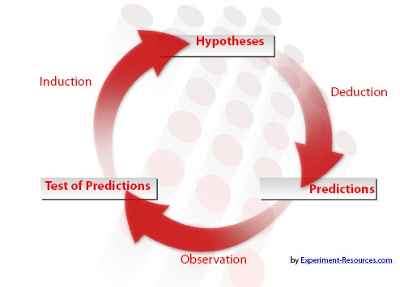

Lecture 1: What is Econometrics
Zheng Tian
Created: 2017-02-15 Wed 19:32
What is Econometrics
What do you think of Econometrics?
- Economics?
- Mathematics?
- Statistics?
Definition of Econometrics
Stock and Watson (2015) define Econometrics as
At a broad level, econometrics is the science and art of using economic theory and statistical techniques to analyze economic data.
Science or art?
The principle of falsifiability of scientific research, as Karl Popper defined.

Figure 1: A reasoning cycle of scientific research
Economic theory, statistics, and data
- A complete process of econometric research consists of
- Economic theory
- Statistical techniques
- Economic data

Figure 2: A workflow of econometric research
Economic Questions We Examine
Question #1: Does reducing class size improve elementary school education?
The argument for small class size goes like this
Small classes get more teacher-student interaction, fewer disruptions, and higher grades in test.
The question of interest
The research design
- Qualitative research design
- A field investigation
- Quantitative research design
- Randomized controlled experiments (RCE, or randomized controlled trial, RCT)
The sample and data
- Draw samples and collect data from 420 California school districts in 1999.
- Cross-sectional data. Each row represents a distinct unit of observation. All observations are collected in a single year.

Figure 4: A screen shot of the dataset the California school districts in 1999
The econometric model
- Use common sense to build an econometric model in this case.
- Variables involved: the average test scores in a school district (TestScore) and the student-teacher ratio STR.
- For simplicity, we set up a simple linear regression model as follows,
\[ TestScore = \beta_0 + \beta_1 STR + OtherFactors \]
- The hypothesis we make is that if STR has a non-zero effect on TestScore, that is, \(\beta_1 \neq 0\).
- The model is then estimated using some estimation method, and we test the hypothesis with the estimation results using some test statistics.
Three other questions
- Question 1
- Does reducing class size improve elementary school education?
- Question 2
- Is there racial discrimination in the market for home loan?
- Question 3
- How much do cigarette taxes reduce smoking?
- Question 4
- What will the rate of inflation be next year?
A summary of data types
| Questions | Data types | Econometric methods |
|---|---|---|
| #1 | experimental, cross-sectional | multiple regression |
| #2 | observational, cross-sectional | multiple regression with binary dependent variable |
| #3 | observational, panel data | Panel data regression model |
| #4 | observational, time series | multiple regression with lagged dependent variable |
Causal Effects and Idealized Experiments
Randomized controlled experiment
Randomized controlled experiments (or trials, RCTs thereafter)
- Clinical trials to test the effectiveness of medical intervention.
- All participants are randomly assigned into two groups.
- The control group receives no treatment (or placebo)
- The treatment group receives the treatment.
- After a follow-up period, compare the two groups.
An illustration of RCTs

Figure 5: An illustration of a randomized controlled experiment
The advantage of RCTs
- Randomization minimizes selection bias.
- In the example of California school districts, randomized control experiments ensure that the only systematic difference between the classes in the control group and those in the treatment group is the treatment (reduced class size) itself, with the effects from other confounding factors eliminated.
The disadvantage of RCTs
- Time and costs
- RCTs usually are expensive to undertake and take a long time to observe the effect of treatment.
- Conflict of interest dangers
- RCTs may be funded by special interest groups so that its objectivity is doubtful.
- Ethnics
- Especially in social science, we cannot impose some treatment due to ethnic concerns.
Causal effect
- Causal effect is defined to be the effect on an outcome of a given action or treatment as measured in an ideal RCT.
- The concept of the ideal randomized controlled experiment does provide a theoretical benchmark to define causal effects in research design.
Data Sources and Types
Experimental versus observational data
- Experimental data come from experiments designed to evaluate a treatment or policy or to investigate a causal effect.
- Observational (or nonexperimental) data are collected using surveys, and administrative records.
- The problem of using observational data to estimate causal effects is that the "treatment" is not randomly assigned.
- Much of econometric methods are developed to deal with causality using observational data.
Cross-sectional data
- Data on different entities for a single time period are called cross-sectional data.
- The sequence of each observation number is arbitrarily assigned.
- Cross-sectional data can be experimental data or observational data.
Time series data
- Time series data are data for a single entity collected at multiple time periods.
- The sequence of each record is based on the time period it happened.
Panel data
- Panel data, also called longitudinal data, are data for multiple entities in which each entity is observed at two or more time periods.
- Panel data are very useful for estimating causal effects. time permits, we will cover some basic use of panel data at the end of this course.